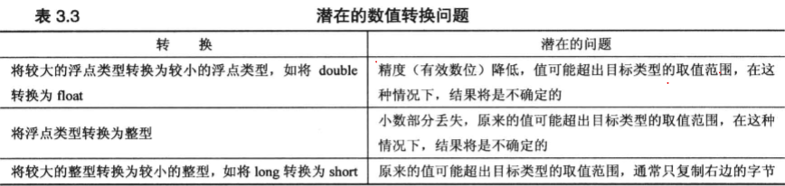

c++自动执行很多类型转换：
如果不知道进行这些自动转换时将发生的情况，将无法理解一些程序的结果，因此下面将介绍这些规则。
1，初始化和赋值进行的转换
c++允许将一种类型的值赋给另一种类型的变量。这样做时，值将被转换为接收变量的类型。
假设：
long so_long;
short thirty;
so_long = thirty; //assigning a short to a long
程序将 thity 的值short（通常是16位）扩展为 long(通常为32位)。扩展后将得到一个新值，被存储在 so_long 中，而 thirty 的值不变。
将一个值赋给值，取值范围更大的类型通常不会导致什么问题。如，将 short 值赋给 long 变量并不会改变这个值。
然而，将一个很大的 long 值赋给 float 变量将降低精度。因为 float 只有六位有效数字。
因此，有些转换是安全的，有些则会带来麻烦。

将 0 赋给 bool 变量时，将被转换为 false;而非零值被转换为 true。
2，以 { } 方式初始化时进行的转换（c++11）
c++11将使用大括号的初始化称为“列表初始化”，这种初始化常用于给复杂的数据类型提供值列表。它对类型转换的要求更严格。
列表初始化不允许缩窄，即变量的类型可能无法表示赋给它的值。如，不允许将浮点类型转换为整型。在不同的整型之间转换或将整型转换
为浮点型可能被允许，条件是编译器知道目标变量能够正确存储赋给它的值。如，long 变量初始化为 int 值，因为 long 总是至少与 int 一样长；
const int code = 66;
int x = 66;
char c1 {31325}; //narrowing,not allowed
char c2 {66}; //allowed because char can hold 66
char c3 {code}; //allowed because char can hold 66
char c4 {x}; //not allowed,x is not constant
x = 31325;
char c5 {x}; //allowed by this form of initialization
3,表达式中的转换
当同一个表达式中包含两种不同的算术类型时，c++将执行两种自动转换：
在计算表达式时，c++将 bool、char、unsigned char、signed char和short值转换为 int。
具体说，ture 被转换为 1，false 被转换为 0.这些转换被称为整型提升。
将不同类型进行算术运算时，也会进行一些转换，如，将 int 和 float 相加时，运算涉及两种类型时，
较小的类型将被转换为较大的类型。
4，传递参数时的转换
传递参数时的转换通常由c++函数原型控制。
5，强制类型转换
c++还允许通过强制类型转换机制显式的进行类型转换。强制类型转换的格式有两种。
如，为将存储在变量 thorn 中的 int 值转换为 long 类型可以使用如下表达式中的一种：
(long) thorn //returns a type long convert of thorn
long (thorn) //returns a type long convert of thorn
强制类型转换不会修改 thorn 变量本身，而是创建一个新的、指定类型的值，可以在表达式中使用这个值。
强制转换的通用格式如下：
(typeName) value //old c syntax
typeName (value) //new c++ syntax